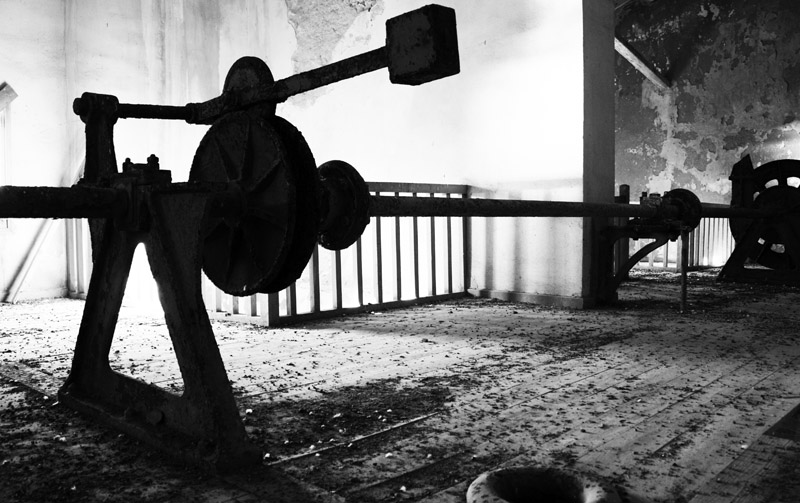
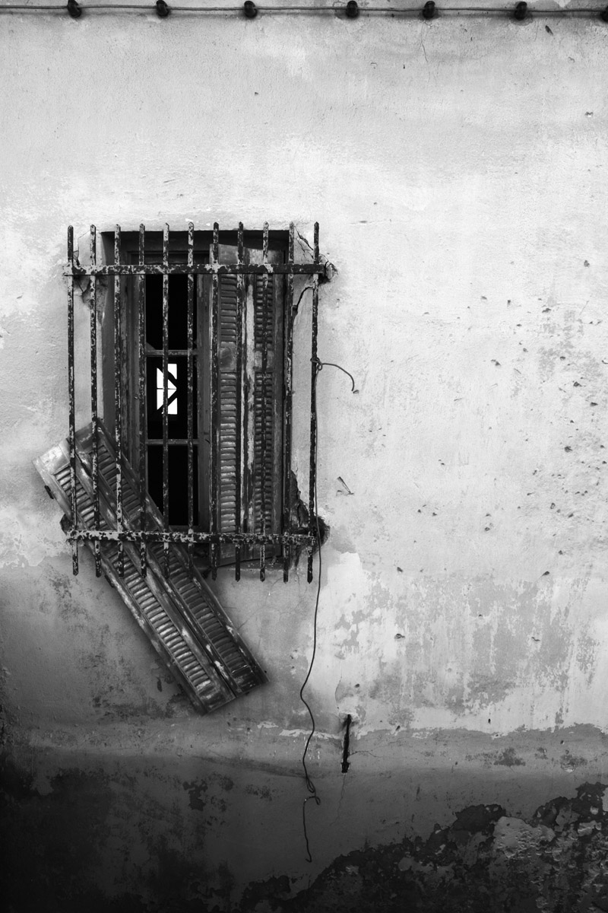

This interesting looking building was once the hub of telecommunications for Greece, established c,1854 (I think). It is the site where the first submarine cables were laid, in 1858, connecting Syros to mainland Greece via Pieria. Later, cables were laid connecting Syros and Chios, subsequently providing the first telecommunications to Constantinople and Alexandria.
According to this reference Greece under King George, "There are 8,958 kilometres of wire, and 186 telegraph- offices. The most important service is that of the Eastern Telegraph Company, with its head-quarters at Syros." The building later housed the Merchant Navy School.
The interior of the building is fascinating. Strange mechanical devices lay dormant amidst the call of squabbling pigeons.
The structure was severely damaged during the Second World War, although restored in 1947 to house the TTT (Panhellenic Telephony Telegraphy & Postal Service).